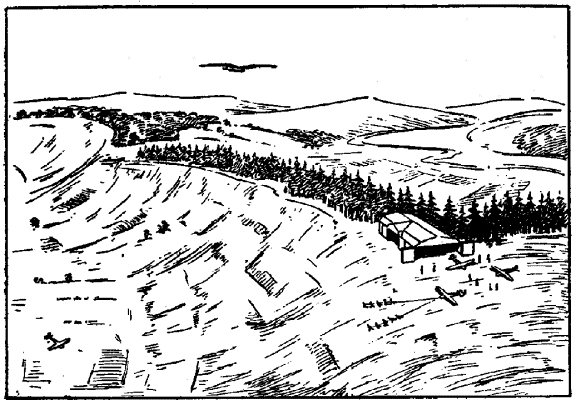
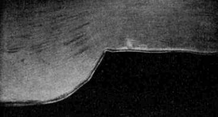
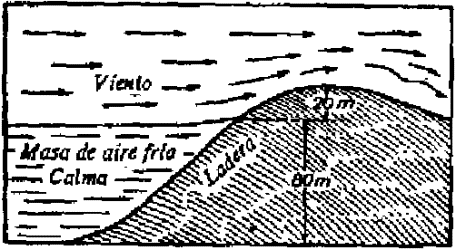
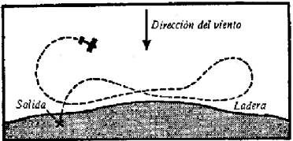
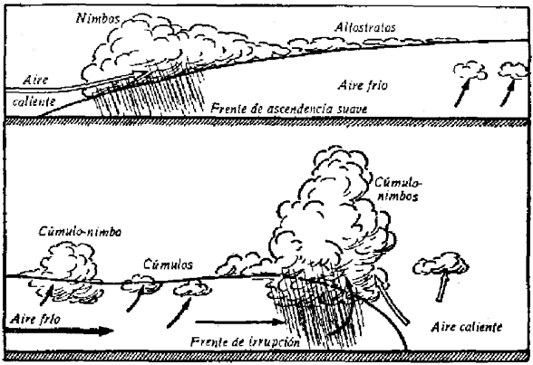
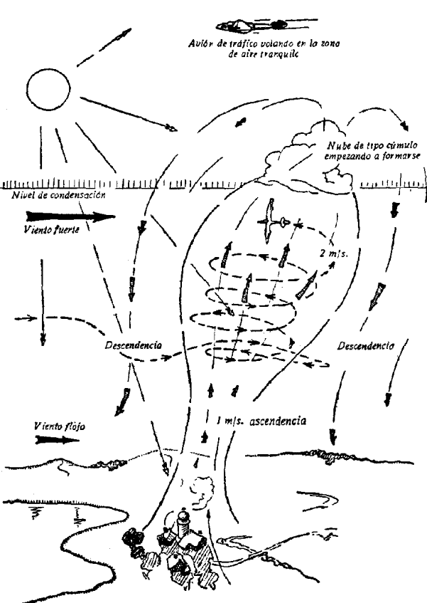

Manual del Vuelo a Vela
Wolf Hirth
1942
Las ascendencias
por
WOLF HIRTH
Ascendencia
orográfica
La
ascendencia más conocida es la orográfica, la cual se presenta allí donde una corriente
horizontal de aire encuentra el obstáculo de una montaña que, desviando el aire, le
fuerza a elevarse. Con esta ascendencia voló ya Otto Lilienthal y fue la que hizo posible
los primeros grandes vuelos a vela en el Rhön y en otros lugares en los años de 1920 a
1925. Aunque este género de ascendencia no representa hoy el importante papel de ser el
único manantial de energía del vuelo a vela como en aquellos años representaba, es, sin
embargo, el campo en el que se zarandean los principiantes del vuelo a vela, y en el que
también se encuentran a gusto los antiguos pilotos de velero.
La
intensidad de la ascendencia depende no solamente de la velocidad horizontal del aire,
sino también de la altura de la montaña: de su forma, según que sea cónica o una
cadena extensa; de la pendiente de las laderas; asimismo de la clase de vegetación, prado
o bosque; de la posición del sol y consiguiente influencia térmica; además de la clase
de terreno que haya ante la montaña.
La
mejor ascendencia y mejores condiciones para el vuelo, es decir, el terreno ideal para
producir una ascendencia orográfica se hallará allí donde, en una gran llanura, sin
otras colinas u obstáculos, se levante una hermosa cadena de montañas, poco más o menos
como se representa en la figura 109. Aquí el viento sopla libremente y es recogido en
toda su extensión por el terreno que se eleva formando como una cazuela o ensenada,
mientras que si se tratase de un monte cónico al aire le rodearía por ambos lados y
solamente se produciría una ascendencia pequeña.
Hay que
fijarse especialmente en la formación de torbellinos que pueden presentarse en un
terreno de vuelos y que precisamente puede ser en la parte dedicada al envuelo y
aterrizaje. Muchas veces no se puede evitar que las zonas de terreno destinadas a esos
fines y, más aún, la destinada al aterrizaje, estén situadas en regiones de la masa de
aire en donde se producen torbellinos. Esto dificulta las operaciones de vuelo, cuando se
trata de alumnos; pero para pilotos con práctica no significa más que poner atención en
ello durante unos segundos (fig. 109).

Fig. 109. Terreno favorable para la ascendencia orográfica. En la zona de envolar y aterrizar cerca del cobertizo, la unión de meseta y ladera es suave, con una curvatura adecuada para facilitar las « maniobras de envuelo », permitiendo fácilmente el « correr » del equipo de envuelo, cuando se da esa voz, mientras que el resto de la ladera es más empinada y su unión con la meseta es cortada; todo lo cual refuerza la ascendencia. Los aterrizajes son posibles de hacer cerca del cobertizo, tanto contra el viento como con el viento, ladera arriba. Además, se puede aterrizar sin peligro alguno en el valle y luego envolar otra vez por remolque de avión o de torno, o bien, en el caso de viento flojo, instalar el torno arriba, cerca del cobertizo y envolar ladera arriba, con lo cual se puede llegar a alcanzar gran altura sobre el valle, pues el cable de remolque sólo tiene los 0º de inclinación cuando el aparato llega al nivel de la meseta.
Como en otro
lugar se ha explicado, una inversión muy marcada impide los movimientos ascendentes del
aire. (Se alude a una inversión de temperatura en la atmósfera. Según se ha visto, el
régimen de temperatura en la atmósfera es, generalmente, ir descendiendo con la altura.
Inversión se presenta cuando, en lugar de descender, la temperatura aumenta con la
altura. Si la estratificación es ya estable desde que el descenso de temperatura es
inferior a 1º por 100 m. se comprende que aun será mayor la estabilidad si, lejos de
disminuir, la temperatura crece. Una inversión es como una barrera infranqueable para
el aire ascendente. - N. del T.)

Fig. 110. Modo de producir la ascendencia orográfica en una ladera empinada (Experimento de Bachem). El viento que viene de la izquierda es desviado hacia arriba por la montaña. Se observa el torbellino formado detrás del borde de las mesetas. (Fotografía de un canal hidráulico de ensayo, haciendo visibles los filetes líquidos por medio de polvo de aluminio)
Esto ocurre
no sólo en las grandes alturas, sino también muy frecuentemente junto al suelo. Si
suponemos que en el valle, delante de la montaña, hay una masa de aire frío, hasta una
altura, por ejemplo, de 80 m., entonces en esta masa apenas habrá movimientos de
aire, y si existe una montaña que tenga 100 m. de altura, el efecto del viento que sople,
pasando por encima de la masa fría, será como si una montaña de sólo 20 m. de altura
recibiese el viento que sopla libremente (Fig. 111).

Este caso es
mucho mas frecuente de lo que se cree, especialmente en los meses de otoño, invierno y
primavera. En invierno, incluso, ocurre que masas enormes de aire frío permanecen sobre
una comarca semanas enteras, y esta situación sólo cambia cuando fuertes corrientes
de aire van llevándose poco a poco el aire frío. A veces esto puede ocurrir en un día o
en un plazo muy corto, así que, acaso, en un terreno de vuelo a vela no es posible el
vuelo en las primeras horas de la mañana, a pesar de comprobarse la existencia de
viento favorable, mientras que a mediodía, si el aire frío ha sido ya expulsado del
valle, son extraordinariamente buenas las condiciones para volar. (En la mayor parte de
nuestro país será mejor decir la estación fría; aun en la vertiente cantábrica ocurre
el fenómeno también en primavera y hasta en verano, en las primeras horas de la mañana.
El aire enfriado en las cumbres de las montañas desciende a lo largo de las laderas, y se
acumula en el valle. En la estación y comarcas en las que el enfriamiento nocturno no es
bastante para producir ese efecto, no se presentan las condiciones apropiadas para que
tenga efecto el fenómeno que se analiza en el texto. - N. del T.)
Yo
mismo he encontrado tales circunstancias en las montañas del Japón, donde en el otoño
tuvimos durante catorce días, día por día, el mismo tiempo, solamente que varias veces desfasado
de una a dos horas. Antes de las diez o las once era imposible hacer nada; entre once
y trece horas ya se podía empezar a mantenerse bien en el aire, y a la caída de la tarde
aun volaba a vela en las montañas.
Lo
mismo que ocurre en algunos casos de vuelo térmico, que la inversión limita las
ascendencias, puede suceder también que una inversión sobre la ladera limite la
ascendencia orográfica.
Por las
razones dichas resulta claramente que el anemómetro es un instrumento muy imperfecto
para el vuelo a vela orográfico; lo que se habría de tener es un instrumento medidor de
ascendencias, el cual, desgraciadamente hasta hoy, no existe, aunque tal vez no sería
demasiado difícil construirlo.
El
vuelo en la ascendencia orográfica es el más sencillo de ejecutar para los jóvenes
pilotos de velero, porque se puede saber muy exactamente en dónde se presentarán tales
ascendencias, que será en el lado de la montaña de donde viene el viento o lado de
barlovento. Mucho más difícil es el encontrar la ascendencia cuando la corriente
vertical del aire es « invisible » completamente, como veremos después en las
ascendencias térmicas de altura. El vuelo orográfico tiene también algunos
inconvenientes, especialmente el de que la zona de ascendencia es de anchura muy reducida,
de modo que cuando hay gran actividad de vuelo excita mucho particularmente a los
espectadores, ver pasar planeando tan cerca unos de otros, diez, doce o aun más veleros
(fig. 112).

Fig. 112. Vuelo con apoyo orográfico. Se envuela contra el viento desde el borde de la meseta y al virar se va siempre huyendo de la montaña
Frente tormentoso
Después de
ser durante muchos años la « ascendencia orográfica » el único « proveedor de
gasolina » de los pilotos de velero, consiguió Max Kegel, de Kassel, el año 1926
aprovechar un « frente tormentoso » para ganar altura. Una turbonada que pasó sobre
la Wasserkuppe, se lo llevó, a medias contra su voluntad, y Kegel desapareció entre la
niebla y las nubes durante horas y se le estuvo buscando por los alrededores de la
Wasserkuppe, hasta que una llamada telefónica desde lejos trajo la noticia de que todo
había ido bien y de que un hombre, por primera vez, se había librado de las montañas y
de sus ascendencias. Max Kegel volvió a la
Los
frentes tormentosos son irrupciones de aire frío que, casi siempre con gran velocidad,
avanzan del Oeste al Este y ocasionan la rápida ascendencia de las capas de aire con
estratificación lábil que van encontrándose ante sí. Se puede decir, por
consiguiente, que el frente tormentoso es una especie de fenómeno inverso al de una
ascendencia orográfica.
En
ésta la cuña permanece fija y el aire, al chocar contra ella se convierte en
ascendencia. Por el contrario, en el frente tormentoso la cuña, que es de aire frío, es
la que se mueve y choca contra el aire en reposo obligando a éste a elevarse. La causa de
que este efecto sea más intenso es debida a que la ascendencia es principalmente de
origen térmico porque el choque del aire determina la resolución de la estratificación
lábil de las masas de aire sobre las que irrumpe a masa fría (Fig. 113).

Fig. 113. a) Un frente
con superficie de ascendencia lenta
b) Un frente de irrupción. El piloto vuela en la zona entre las flechas en blanco,
delante de la tormenta
Un frente
tormentoso suena a peligro y, sin embargo, no es así en la mayor parte de los casos. Así
como el principiante al volar a vela en la ladera tiene la montaña como base de la
ascendencia en que se apoya, en el frente tormentoso, el piloto sabe que delante de la
nube cuenta con una ascendencia tranquila. Yo puedo atestiguar, con mi propia
experiencia, que el vuelo delante de una nube tempestuosa es uno de los modos más
impresionantes y, sin embargo, más sencillos de volar a vela. Que con las tormentas son
posibles los grandes vuelos es bien sabido desde que Günther Groenhoff hizo en 1931 su
célebre vuelo de marca. Pero el hecho de que desde entonces no se haya vuelto a hacer
nada sobresaliente en un frente tormentoso, es una prueba de que estos frentes, por
presentarse raras veces, no desempeñan hoy un gran papel en la vida del piloto de velero.
El vuelo en la
ascendencia térmica
La
ascendencia
térmica es hoy prácticamente la más importante para el vuelo a vela. El tiempo
atmosférico y el viento son debidos a causas térmicas, que es como decir, en último
extremo, a la radiación solar. En el Ecuador terrestre, en donde la radiación solar es
la más intensa, existe permanentemente una corriente ascendente de las masas de aire
caldeadas y por eso más ligeras, mientras que en los Polos, por faltar la acción intensa
de los rayos solares, reinan grandes fríos. El viento que por estas causas iría de los
Polos al Ecuador y a grandes alturas cerraría el circuito en sentido contrario, es
desviado por la rotación de la tierra, convirtiéndose en viento del Oeste, por lo cual
los fenómenos del tiempo se mueven hacia el Este. Lo que antecede no está expuesto con
todo rigor científico, pero así resulta más comprensible para los que practican el
vuelo a vela.
Lo que
sucede en grandes proporciones entre el Ecuador v los Polos se reproduce en todas partes
pero en menor escala. Allí donde el sol calienta el suelo enérgicamente se calienta
también, en poco tiempo, el aire que está encima y, haciéndose más ligero, toma un
movimiento ascensional, por lo cual basta generalmente con que el aire tome una
temperatura de pocos grados más que el aire circundante. Pero es un hecho conocido que
una porción de aire que asciende se enfría y, precisamente, si es aire seco se
enfría, en números redondos, 1º centígrado por 100 m. de elevación. Este fenómeno
depende de las relaciones mutuas entre presión, temperatura y volumen, cosa que, con el
nombre de teoría del calor, constituye una ciencia. Pero nosotros, para comprender el
vuelo a vela térmico, sólo necesitamos saber que el aire ascendente se enfría y que una
porción de aire que a la altura de 500 m. tuviese una temperatura de 10º C., a 1000 m.
de altura sólo tendría 5º
de
temperatura. Debe hacerse constar de un modo claro que se trata de una porción de aire
que asciende, no de las temperaturas que puedan tener realmente las distintas capas de
aire (La disminución
de temperatura con la altura en aire en reposo puede ser, por ejemplo, de 0,5º
por
100, distinta completamente de la del aire que ascienda. De aquí viene el que el aire
caliente de una ascendencia, como pasa al iniciarse el térmico, puede llegar a estar en
equilibrio de temperatura con el aire circundante, especialmente si hay inversión
de temperatura, y entonces cesa el movimiento ascensional. - N.
del
T.).
Estas no tienen
por qué seguir la ley del enfriamiento progresivo y regular con la altura, sino que por
la acción de los fenómenos dependientes de la situación general meteorológica,
presentan una estratificación de temperaturas completamente irregular. Por tanto, puede
ocurrir que la temperatura del aire sea en un cierto lugar 20º
C.
a 500 m. de altura; a 600 m., 19º;
a 700, 18º,
y
así sucesivamente hasta 1200 m.
A esta
altura, si se siguiese cumpliendo la ley debería haber 13º
C.,
mientras que bruscamente se presentan allí, por ejemplo, 15º.
Entonces se
tiene una inversión, es decir, sobre una masa de aire frío (a 1100 m. de altura, 14º),
a 1200 una masa
de aire más caliente (15º).
Seguramente
todos habrán aprendido en la escuela que los primeros hombres que se elevaron en el aire
lo hicieron con ayuda del aire caliente, que tiene menor peso y por eso sube, como pasa
con el agua caliente que se eleva si la que la rodea está más fría. Por consiguiente,
comprenderemos que, en nuestro ejemplo, una zona de aire recalentado hasta los 22º
C.
a 500 m. de altura empezará a elevarse, puesto que el aire de su alrededor sólo tiene en
esa altura 20º.
Pero
también es fácil comprender que el aire, gracias a su viscosidad se « adhiere » al
terreno, a los prados, a los campos de cereales y que antes de iniciar su ascensión tiene
que recalentarse suficientemente ; si no fuese por esa circunstancia, el aire empezaría
su ascensión con sólo tener un exceso de temperatura de 1/10 de grado, con relación a
sus alrededores. En la realidad ocurre ser necesario que la radiación solar obre bastante
tiempo sobre un lugar antes de que se desprenda del suelo un invisible globo de aire
caliente, la pompa térmica, y emprenda su ascensión hacia el cielo. Según sea la
diferencia de temperatura, así será el movimiento ascendente más o menos rápido,
dependiente después la velocidad de la estratificación de temperaturas en la masa de
aire. Es fácil ver que una pompa térmica cuya temperatura difiera en 2 grados de la de
su alrededor dejará de elevarse en cuanto desaparezca esa diferencia de temperatura, lo
que ocurrirá si llega a una capa de inversión que corresponda precisamente a un salto de
temperatura de 2 grados.
Este
caso se presenta muchas veces en la práctica. Siempre hay inversiones, unas veces
grandes y otras pequeñas, que no solamente reducen la ascendencia de una térmica, sino
que pueden frenarla por completo. Esto lo nota el piloto en que su variómetro le va
marcando, por ejemplo, un metro de velocidad ascensional y de repente ve que sólo marca
0.
Esto
significa que aunque el aire siga todavía elevándose lo hace con tan pequeña velocidad
que el velero sólo puede conservar altura, pero no seguir ganándola.
Entraremos
ahora algo más en el detalle de este fenómeno de la ascensión y descensión del aire
libre. Cada avión sin motor tiene una cierta velocidad de descenso; por ejemplo, un
velero monoplaza pierde altura con un metro por segundo de velocidad ; por consiguiente,
llegaría al suelo, en un aire completamente en reposo, al cabo de sesenta segundos, si
tuviese 60 m. de altura inicial. Digamos de paso que ésta es la velocidad práctica de
descenso de un velero de escuela, mientras que en los buenos veleros de concurso esa
velocidad es de 60 a 80 cm. Tan pronto como la velocidad ascensional de nuestra
ascendencia sea igual a la de descenso del aparato, éste podrá volar sin perder
altura.
Pero la
velocidad de subida de las pompas térmicas es frecuentemente mayor ; de 2 a 3 m. por
segundo, en algunos casos raros hasta de 5 m/seg. Si hemos llegado a atrapar una
ascendencia de esas condiciones, nuestro velero llegará a tener también velocidad
ascensional, que se calculará fácilmente sin más que restar de la velocidad de la
ascendencia la de descenso del velero. Si, por ejemplo, la ascendencia es de 3 m /seg. y
la velocidad de descenso del velero es de 1 m/seg., subirá a razón de 2 m/seg. (Fig.
114).

Fig. 114. Formación de una pompa térmica sobre un cortijo. Junto a las ascendencias, la mayor parte de las veces existen descendencias. Nivel de condensación es la altura en la cual la humedad se condensa en forma de gotas, cuyo conjunto es la nube
Como la
definición del vuelo planeado es vuelo sin motor perdiendo altura, resulta
paradójico afirmar que volar a vela es planear, puesto que vuelo a vela es un vuelo sin
motor conservando o hasta ganando altura. Se debe observar que se trata de un fenómeno de
movimiento relativo, porque una vez se considera el fenómeno con relación a un punto
fijo en el suelo y la otra vez con relación al aire.
Hasta
aquí hemos hablado de movimientos del aire en días despejados, sin nubes: un tiempo en
que no pueden formarse nubes o por tratarse de masas de aire secas o porque existen
inversiones a muy pequeña altura.
Las
nubes se forman cuando hay masas de aire con suficiente cantidad de vapor de agua, que
toman un movimiento ascensional de la amplitud necesaria para llegar a enfriarse hasta el
punto de condensación del vapor de agua que contienen. Es el mismo fenómeno que ocurre
si en casa se pone agua a cocer en el fogón y así se transforma en gas, es decir, en
vapor invisible. En seguida, en el aire frío que rodea a la vasija, se condensa una parte
en forma de gotas finas, que son visibles y constituyen lo que se llama la nubecilla de «
vapor ».
Así
como nosotros para producir el vapor, es decir, para cocer el agua, debemos proporcionarle
artificialmente calor, en la condensación del vapor para formar agua, o sea en la
formación de las nubes, ocurre lo contrario: se produce calor. Esto es, para nosotros,
pilotos de velero, un fenómeno muy favorable, pues esta cantidad de calor que queda libre
al formarse la nube, origina una nueva y reforzada ascendencia, la ascendencia de la
nube, cuya existencia como energía dinámica ascendente, de suficiente intensidad, fue
descubierta y aprovechada para el vuelo a vela antes que la ascendencia pura y simplemente
térmica. La ascendencia de la nube tiene para nosotros la ventaja de que es « visible
». No hay razón alguna para que la intensidad de la ascendencia de la nube sea mayor que
la simplemente térmica, pues todo depende de la estratificación de temperatura que
existe en el aire circundante. Sin embargo, se han encontrado frecuentemente en las
nubes de gran espesor intensidades de ascendencia que, sin nubes, sólo se han encontrado
en contados casos.
La
ascendencia de las nubes desempeña papel especial en el vuelo de altura. Sólo en casos
muy contados una corriente ascendente puramente térmica puede penetrar a través de una
inversión fuerte y llegar hasta una gran altura, mientras que eso ocurre siempre en una
nube tormentosa.
Antes
he llamado la atención sobre la gran importancia de la « estratificación de la
temperatura ». Si la temperatura del aire en reposo vertical disminuye con la altura más
rápidamente que la del aire que asciende, se ve fácilmente que en estas circunstancias
no es necesaria la radiación solar para que existan corrientes ascendentes térmicas.
La masa de
aire, entonces en equilibrio lábil, sólo necesita un choque
para tomar su
movimiento ascensional, y no es preciso que llegue a estar más caliente que el aire
circundante. Si por alguna causa, tal como, por ejemplo, el efecto orográfico del
terreno, llega a iniciarse su movimiento vertical, entonces asciende rápidamente hasta
que su movimiento sea frenado por una inversión. Esto explica la serie de ascendencias «
misteriosas », tales como la térmica de invierno, la térmica nocturna, etc.
La más
conocida de estas ascendencias es la térmica del anochecer. Todos los pilotos con
práctica han visto que después de un día bueno de ascendencia orográfica, el viento
cae completamente al anochecer. Si alguien se lanza al aire desde la ladera, aunque sea
con el mejor velero, es « chupado » por el valle despiadadamente, mientras que los que
envolaron más pronto siguen allá arriba, volando sobre las laderas más pobladas de
bosque, con un simple « cacharro ». Esto es debido a una estratificación lábil de
temperatura. El calor almacenado durante el día en el bosque húmedo da lugar a una
ligera ascendencia que no basta por sí para volar, pero sí para servir de acción
perturbadora del aire lábil, que toma una ascendencia creciente hasta cierta altura.
Así, se ha llegado a comprobar la existencia durante la noche de ascendencias de más de
6 m. por segundo que llevaron los veleros hasta más de los 1000 m. de altura (en el
África del Sur, en junio de 1937, en la desembocadura del Swakop). Pero también en
nuestra Europa, en días de invierno, con cielo completamente cubierto y con débiles
vientos horizontales, hemos visto volar horas y horas con térmico sobre terreno de
colinas, mientras que en el terreno llano inmediato no se encontraba la ascendencia más
mínima, porque en él el aire lábil no recibía « choque » alguno que determinase
movimientos verticales y hasta acaso estuviesen frenados por la existencia de una ligera
inversión a bajo nivel.
El
afamado viento
térmico
de los
concursos del Rhön de 1934 y 1935 no es otra cosa que la combinación de gran velocidad
horizontal con movimientos verticales de masas de aire lábiles que, además, eran muy
húmedas, es decir, que al elevarse había en seguida fenómenos de condensación y
determinaban la formación de neforrutas, a lo largo de las cuales podía volarse horas y
horas en la misma dirección.
Aun se
podrían hacer más divisiones de los géneros de ascendencia, dados a conocer en la
anterior exposición; sin embargo, me parece que para la práctica actual del vuelo a vela
basta con las clases de ascendencias señaladas y sólo queda por tratar una nueva clase
de ascendencia, que va a ser el objeto del capítulo siguiente.
A esta
ascendencia la designé yo mismo en 1933 con el nombre de onda larga. Como después
del vuelo que me permitió descubrir el fenómeno, abandoné Grunau y, por tanto, las
estribaciones de los Montes Gigantes, mi compañero Steinig, que como yo era profesor de
vuelo en Grunau, fue el que continuó las observaciones de la onda larga y la nube
originada por ella, llamada « Moazagotl ». Steinig escribe en el capítulo siguiente
sobre tan interesante tipo de ascendencia, que a él mismo le dio ocasión para llegar a
su brillante marca de altura de 5760 m., conseguida el 22 de mayo de 1937.